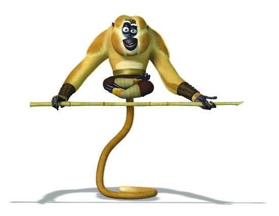

| aaaaaaaaaaaaaaaaaaaaaaaaaaa | Mestre Macaco |
aaaaaaaaaaaaaaaaaaaaaaaaaaa |
|---|---|---|
| Personagem do filme Kung Fu Panda, é um descontraído macaco-dourado. | ||
|  | ||
| Características | ||
| O personagem Macaco, integrante dos 5 furiosos, apresenta o estilo de luta do macaco no Kung Fu. O estilo apesar de conter algumas interpretações do animal, o foco não é esse. As técnicas de Macaco necessitam, em geral, de dedos fortes, voltadas para atacar pontos sensíveis, como olhos e genitais. A marcialidade do Macaco é também carregada de malícia, podendo conter acrobacias ou ataques saltando, sendo muito rico em variedade de técnicas. |